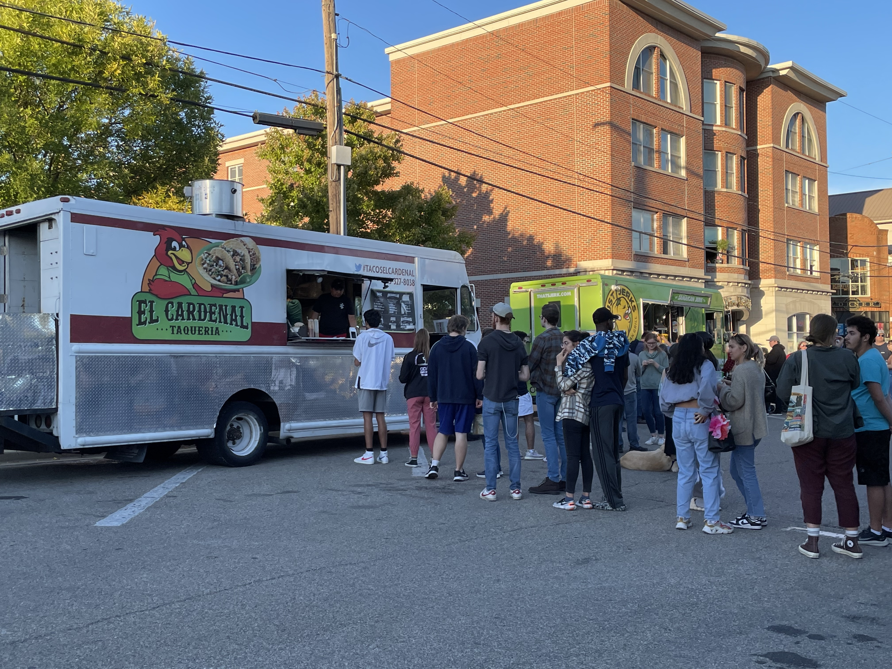

Annual Unidiversity Festival 2022
On Friday, September 30, another successful UniDiversity Festival took place at Oxford Uptown Parks. This collaborative, annual event promotes diversity and inclusion in the community and also allows the community to learn more about the Latin American, Latino, and Caribbean cultures. Individuals from both Miami University and the Oxford community were encouraged to come out and enjoy the celebration. The festival offered a variety of live performances, information on various groups and clubs, live animals to pet, fun games and activities, multiple food trucks, and a very welcoming environment.

Some of the booths had very unique displays. The majority also offered free giveaway items and information sheets as a way for people to learn more about them.

Honey Hill Farm Petting Zoo, one of the several entertainment groups, brought different animals for festival goers to pet. All the animals were very friendly and appeared to enjoy the attention.

Silly Safari also brought animals for people to meet and learn about. Some of them, like Havoc the Coatimundi, required an expert to interact with.
An information booth was set up at the front of the festival for easy access. The volunteers overseeing it were eager to help anyone looking for more information on the event itself or the various groups involved.

Numerous dance groups performed live throughout the night. Each time the crowd quickly gathered to watch the show.
Food trucks lined the outside of the festival offering a variety of options. Those attending had the chance to experience many of the foods within each culture being celebrated.

The Flag Parade represented all of the countries being recognized during the festival. The participants made their way through the audience before ending the parade on stage.

The Charanga LF, Latin band, closed out the night with their performance. In anticipation of the lively music, the crowd took a moment to rest as the band was setting up in.